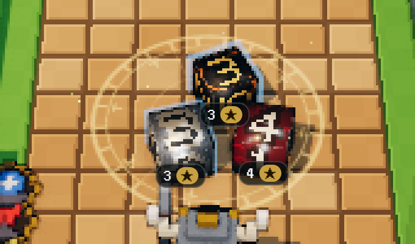
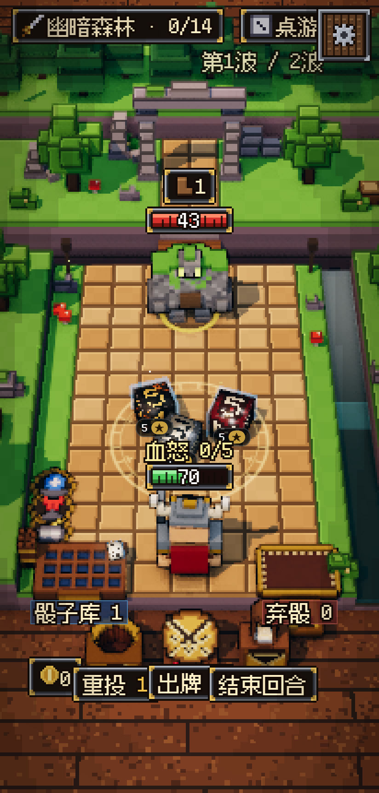
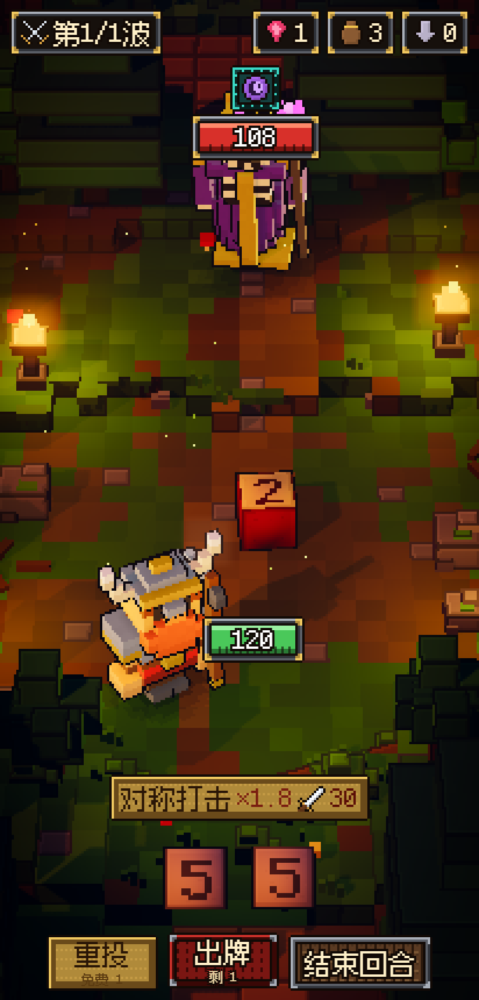
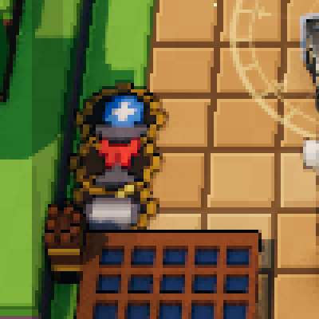
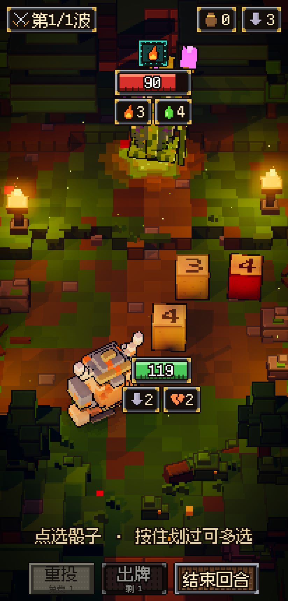
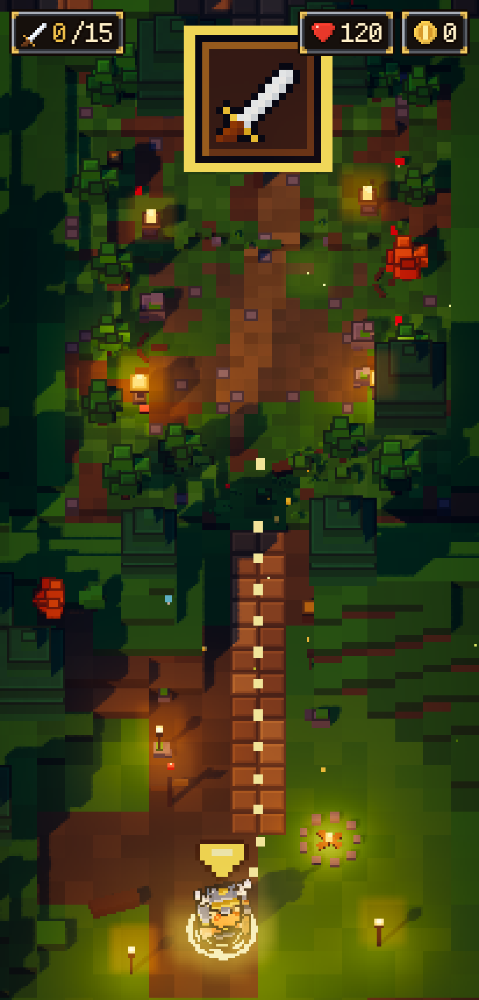

六面史诗 3D · 阶段 1 · 第 1 步（已确认 · 2026-11-12）
阶段 1 要把 v5 的骰子和遗物、v6 第 2 轮的战斗反馈和推进感迁进正式工程。下面是你对 10 件事的答复，已经写进 CLAUDE.md 的定稿表；只剩第 1 条等你看过 A 组后确认。第 2 步（搭工程）已开始。
第 1 条还等你确认：A 组在哪儿看。就是这一页往下第一组片子「A 组 · 骰子」，也就是旧链接 9Mp6… 里最后那一版（v5）的骰子。下面三张是这三段片子的画面，点一下跳过去播放。如果视频播不出来，本机文件在 GameProtos\dicehero3d\docs\refs\clips\（v5_throw.webm 等），拖进 Chrome 就能放。
它只影响第 4 步迁骰子，第 2、3 步（搭工程、迁规则）不受影响，先往下做。
「v5 的骰子」是不是 A 组这一套 待你看
见上面。
落点 定
保留 v5 的投掷手感，落点放大到整片战场前沿。新增：敌人攻击时骰子要让开，攻击完再回到原位。
选骰 定
v5 的点选和长按看效果卡，加 v6 的按住滑过多选。
遗物位置 定
你记得的是「一个模型飞过去」，位置不限。定为漂浮在 UI 层：遗物模型单独一层渲染，不会被场景挡住；触发和飞行演出照 v5。
场景内操作物件 改
不做骰杯、印章、沙漏这类具象物件，重投、出牌、结束回合用实体按钮（有厚度、按下有手感）。骰子队列不用容器，骰子漂浮着排队。
额外 4 颗骰子 定
怒火、泰坦之拳、旋风斩、斩杀。
开局 3 个遗物 定
猩红圣杯、怒火燎原、点数统计器。
巫妖召唤食尸鬼 定
照原数据保留。
Boss 语音 定
Breeze 锁定音色中文版，带巫妖音效处理：voice/out_roles_v1/wav/fx/breeze/locked/lich_c1_*_zh.wav。
玩家角色 新增
试做鱼人。职业机制仍是嗜血狂战，外形是鱼人狂战士，原创造型。3 个画面方向各出一版。
进战斗：敌人登场，骰子从左下的骰子库飞出，翻滚着落在英雄面前的符文圈里，每颗骰子下面挂着点数牌。
点选两颗：浮起、发光、冒火花，顶部出现牌型和伤害预览。点骰杯重投：旧骰子扫进右下的弃骰托盘，新骰子从骰子库飞出再投。
点印章出牌：骰子升成一排面向镜头，「对称打击」立体字砸下，点数逐颗飞进武器累加，遗物依次加成，然后切越肩镜头，骰子砸向敌人，打出 42，用过的骰子弹回弃骰托盘。

上：怒火（黑铁、橙色发光数字）。左：铁壁（钢、铆钉）。右：血之渴望（血琥珀、尖刺）。点阵数字，每颗骰子底下挂点数和特效标记。

412 宽的手机上骰子很小，英雄头顶的血条牌压在骰子上。正式工程的镜头要保证骰子点数一眼可读。

你说 v5 的骰子比这一版好。v6 的骰子是纯色方块，选中后排到屏幕下方的手牌行。只取它的「按住滑过多选」和「满场投掷」两点，见确认 2、3。
点数飞进武器之后，三个遗物依次触发：令牌跳起，弹出发光的立体复制品和名字标签，沿弧线拖着金色尾迹飞向武器或英雄，落点出光圈。
同一段演出用游戏内慢放录的，方便看清弹出、飞行和落点。
看令牌在场景里的位置，以及遗物飞行和牌型、计数器的先后关系。

体素圆台，顶上是遗物自己的像素图案，叠在骰子库上方。
按住滑过两颗 5 选中，拖到巫妖身上松手出牌：骰子升起，「对称打击」立体字和 ×1.8，狂战冲上去砍，巫妖闪白、出光圈和伤害数字。
巫妖出招施法，打到狂战身上，狂战受击闪光、头上挂出「灼烧」；接着新回合的骰子满场投出，这就是确认 2 说的满场投掷。
一对 6 把巫妖打到 40% 以下，它喊出残血台词；下一回合换成残血招式：狂战挂上灼烧，诅咒往骰袋里塞进一颗诅咒骰子。
最后一击：巫妖头上爆出「击碎！」，碎成紫色碎块散落，胜利横幅，随后首领遗物摆上石台。

巫妖身上挂了灼烧和中毒，整个身体被毒色覆盖；狂战身上挂了虚弱和易伤，信息牌下方显示层数。
点开始后，三个英雄站在场景里。点狂战，它走上前，下方出信息牌；再点出发，英雄站上起点，镜头升到全景。
点节点，英雄沿路走过去，镜头从全景俯冲进空地；战前准备在场景里摆三个遗物，跳过后巫妖从地下升起，名字横幅和登场台词。
首领遗物和战利品骰子摆在空地的石台上，选中领取（这里是机器人代点，所以很快），然后镜头升回全景地图。

现在的全景高度。正式工程要更高、看得更全。
迁移计划
状态沿用 CLAUDE.md 定稿表：定稿 = 照搬机制和节奏，不改设计；基线 = 以它为起点加强；重做 = 新做。源码都在 _ref/px3d/ 下：v5 是 dh3d_src/，v6 第 2 轮是 dh3d6_src/。同样的内容也写在 docs/迁移计划_阶段1.md。
src/logic/、src/data/；3D 版 03_rules.js（v5 和 v6 完全相同）、v6 04p_piles.js、dh6_tools/piles_test.mjssrc/core/02e_dice.js（材质家族、点阵数字、贴图、dieFx）、02s_dicesig.js（每颗骰子的轮廓件、数字风格、待机 / 落地 / 触发特效）07_qa.js 的 faceCheck 做自动检查src/present/dice/02_world.js 的预模拟投掷（simOne / simThrow / assignFaces / playThrow：cannon-es 预演后回放，落地朝上的面就是点数），04_battle.js 的 drawPhase / throwDice / sweepOutsrc/present/dice/04_battle.js（toggleSelect、可组牌型的蓝光提示、updatePreview）、04h_hud.js（hudPreview、relicWill）；v6 06_boot.js 的按住滑动多选docs/godot-port/08 第 4 节）src/present/dice/、src/ui/04_battle.js 的 presentHand、launchAttack；02x_text3d.js（t3Slam / t3Fly / t3Counter / t3Stamp / t3Shatter）src/present/stage/（演出队列）04_battle.js doReroll、04h_hud.js 骰杯src/present/dice/04q_queue.js（QUEUE.toss、drawFromBagA 的飞行）src/present/dice/04h_hud.js（rebuildRelics / relicToken、触发跳动）、02u_vtable.js（vToken）、02_world.js（makeRelicModel）、04_battle.js 528–545 行 relicPopsrc/present/relics/04_battle.js（hitEnemy、playerTakeHit、enemyAct / windUp / lungeAt / castOrb / casterSkill、resolveDeaths、enemyDeathFx）、02f_status.js（状态着色器、各元素命中特效）、02v_vox2.js 的 shatterRig、02x_text3d.js；顿帧、trauma 震屏、闪白、慢放、光脉冲在 kit_dh6.jssrc/present/fx/、src/present/stage/02g_world.js（整章一个世界、节点空地、灯光池、环境生命）、05_meta.js（openMap、travelTo、swoopIn、场景内选择 CHOICE、afterBattle）、02c_hero.js 的镜头架src/present/world/02c_hero.js（战斗镜头 40° / fov 24，setShot / camMove 的无缝过渡）src/present/director/src/present/looks/<方向>/demos/dicehero-ui（13 个状态）；v6 04h_hud.js 的人物信息牌pxui/AGENTS.md 用 merge 提案改布局；视觉跟随画面方向src/ui/sfx/out_dicehero_v1（10 类各 5 个变体）、原版 BGM 三首、v5 00_head.js 的合成音层、巫妖语音（Breeze 锁定音色中文版）src/audio/07_qa.js（骰面朝向检查、闪烁检测、亮度统计、draw call 拆分）、window.__dh6window.__dh；录屏用这次新写的 tools/cap.mjs，虚拟时钟逐帧录制，GPU 忙时也是准确的原速src/debug/、tools/明确不迁：v5 的 KayKit 小人（3.8MB 数据）、软泥雕塑角色、落崖关式棋盘、v6 的方块道具、两版的体素人物造型（只保留碎块死亡的算法）、DOM 和 CSS 写的像素 UI、v6 的手牌行和顶栏计数器。它们要么属于要重做的板块，要么被 pxui 取代。
dicehero3d/
src/
core/ 纯规则：数据、牌型、结算、遗物、敌人 AI、骰堆、机器人；只输出战斗事件
present/
stage/ 演出队列：每个效果都有 蓄力 → 命中 → 余韵
director/ 镜头导演
dice/ relics/ fx/ text3d/ world/
looks/A|B|C/ 外观包：渲染光影、角色、场景、骰子材质、特效配色、UI 主题
ui/ pxui 布局和绑定
audio/ platform/ debug/
tests/ 规则单测、骰堆用例（迁自 piles_test.mjs）、机器人整场自动打
tools/ cap.mjs 录屏截图、sheet.py 拼图、构建脚本
Vite + TypeScript；three 和 pxui 用同一个固定版本（0.162.0），cannon-es 0.20.0，全部打包，不走 CDN。开关：?look=A|B|C 切画面方向；每项表现强化单独一个开关（如 ?cam=director|v6），对比确认后再转正。
录制说明：本机 GPU 这段时间被一个 Python 计算任务占满（应该是语音生成），游戏实时帧率在 15–60fps 之间波动。所以这些片子是用虚拟时钟逐帧录的：游戏每帧固定走 1/60 秒，录完按原速回放，节奏和你在流畅机器上看到的一样。片子都没有声音。